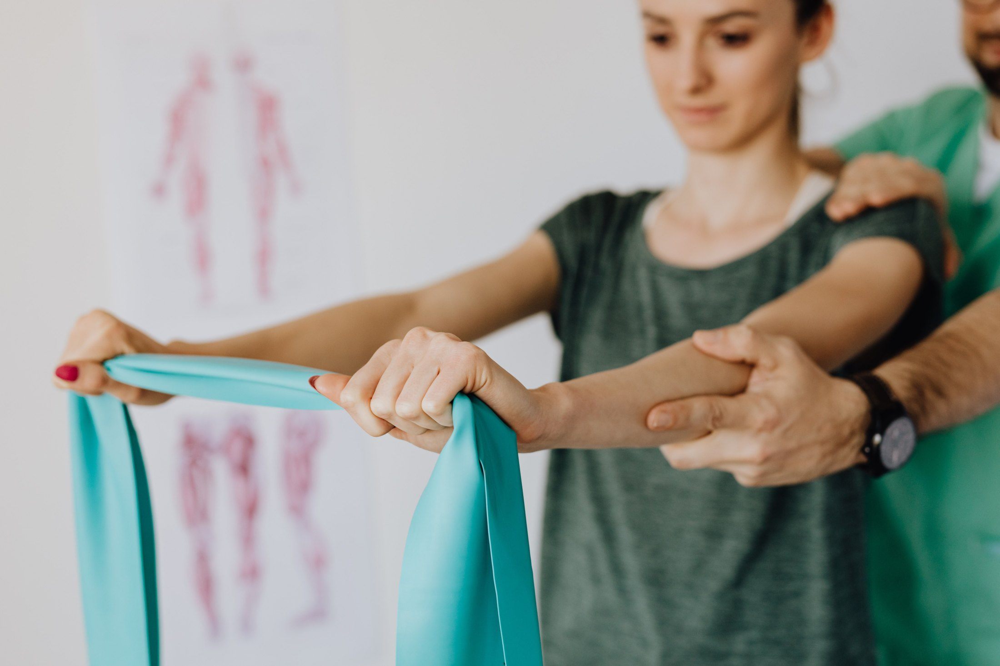
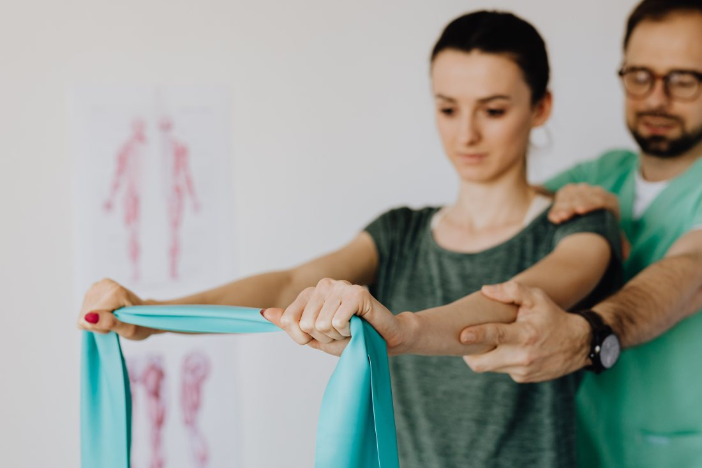
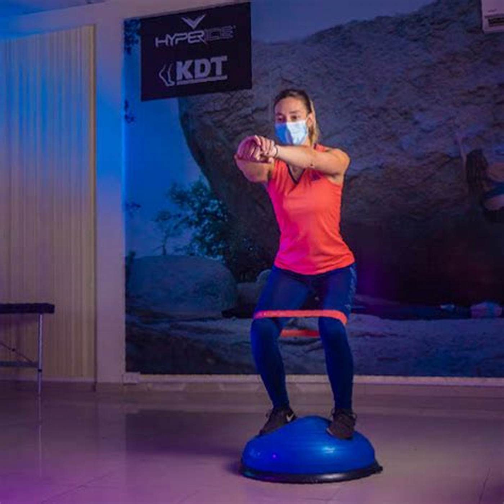
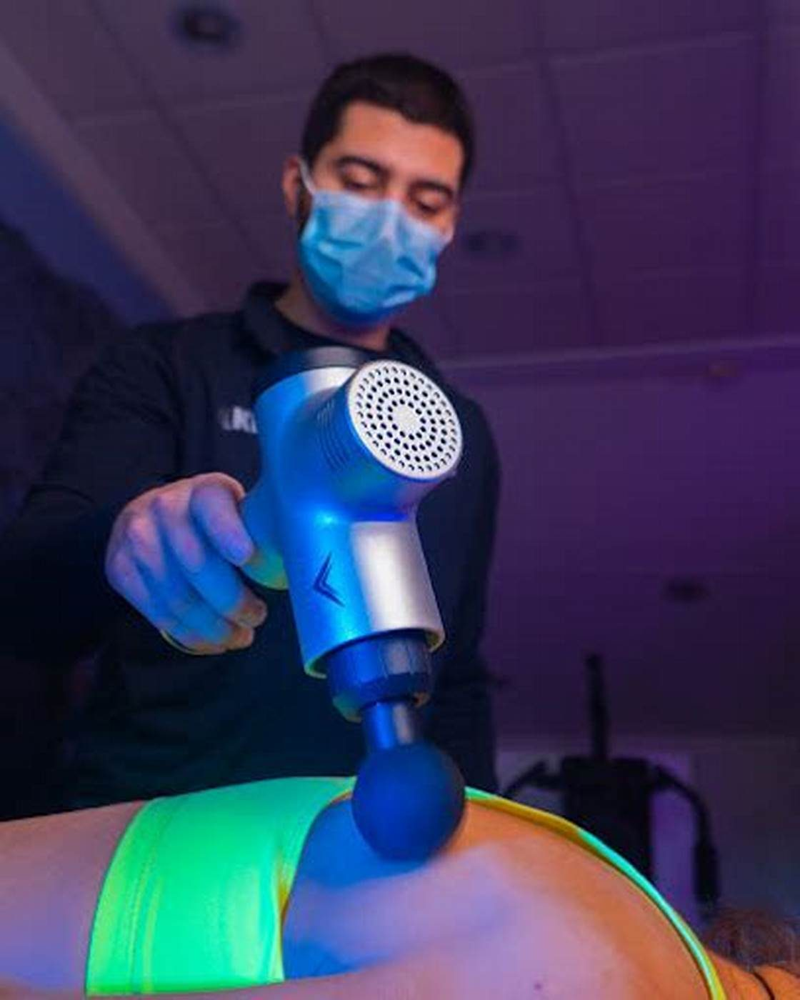

Kinesiología deportiva y traumatológica · Pucón
No es cuándo.
Es si ya puede.
Todo lesionado pregunta la fecha, y la fecha es la respuesta menos útil que existe. Volver al deporte no se decide en el calendario: se decide con pruebas que se pasan o no se pasan. Esta página las pone por escrito.
- nota en Google
- 5,0
- reseñas
- 60
- teléfono
- 9 8159 7981
Criterios, no fechas
Volver a correr
Estas cinco pruebas son las que se usan, en general, para decidir si alguien está listo para volver. No son un test que se pueda aplicar solo en la casa: son la forma en que se piensa la decisión, y sirven para entender por qué el kinesiólogo dice «todavía no» cuando uno se siente bien.
01
Trote continuo
10 min · sin dolor · sin cojear
Si a los diez minutos aparece dolor o el paso se descompensa, la estructura todavía no tolera carga repetida. Correr una hora empieza por aguantar diez minutos parejo.
02
Salto en un pie
apoyo controlado · sin molestia
Saltar es fácil; aterrizar es lo difícil. Lo que se mira no es la distancia sino si la rodilla se va hacia adentro al caer — ahí está la recaída que viene.
03
Fuerza lado a lado
la lesionada alcanza a la sana
Es el criterio más objetivo de los cinco y el que más se salta. Una pierna que quedó más débil compensa con la otra, y la que se lesiona después suele ser la sana.
04
El día siguiente
sin hinchazón · sin dolor nuevo
La prueba de verdad no es cómo quedó al terminar, es cómo amaneció. Una articulación que se hincha después de entrenar está avisando que la carga fue más de la que tolera.
05
El gesto del deporte
cambiar de dirección y frenar sin dudar
Correr derecho no es jugar. Frenar, girar y salir otra vez es donde se rompen las cosas, y hay que poder hacerlo sin pensarlo: dudar en el movimiento es un dato clínico, no una falta de carácter.
La parte incómoda
Volver antes de tiempo no adelanta nada: es la forma más común de perder una temporada completa. La lesión que se repite casi nunca es mala suerte — es la primera, que no había terminado de sanar.
Por eso los criterios se escriben antes de empezar, no el día que uno quiere volver. Puestos por delante son una meta; puestos al final suenan a excusa.
Estos criterios son generales y sirven para entender la lógica de la decisión: no son una pauta para autoevaluarse ni reemplazan la evaluación de un profesional, y los de cada persona dependen de su lesión, su deporte y su etapa. Este texto lo escribió quien hizo el sitio y lo revisa y lo firma el kinesiólogo antes de publicarse.

Lo que se corrige, no lo que se apura
Volver antes no es volver mejor
El apuro por competir es el que trae la segunda lesión. Una vuelta bien hecha no acorta el plazo: corrige lo que hizo necesaria la pausa, y por eso el alta se da cuando las pruebas se pasan y no cuando el calendario lo permite. Esa diferencia se explica una vez y evita media temporada perdida.
Se lesionó de paso
La lesión del visitante
Pucón se llena de gente que corre, pedalea, sube el volcán y se lesiona lejos de su kinesiólogo. Nadie le habla por escrito a ese lesionado, que además tiene fecha de vuelta y está mirando el teléfono desde el hotel.
En los días que le quedan
Qué sí se puede hacer
- Evaluar de qué se trata y descartar lo que necesita otra cosa —una radiografía, un médico— antes de que se suba al auto.
- Bajar el dolor y la inflamación para que el viaje de vuelta sea llevadero.
- Enseñar qué hacer y qué no en los días siguientes, que es donde la mayoría empeora una lesión menor.
- Dejar por escrito qué se encontró y qué se hizo, para que su kinesiólogo de allá no parta de cero.
Con honestidad
Qué no se resuelve en una semana
- Una recuperación completa: eso son semanas o meses y sigue en su ciudad.
- El retorno al deporte — los cinco criterios de arriba no se cumplen en cinco días.
- Lo que necesita imágenes o especialista, si acá no está disponible.
Decirlo de entrada es lo que hace que el visitante confíe en lo que sí se le ofrece.
El informe con el que se va
Es lo que convierte una atención suelta en parte de un tratamiento: qué se evaluó, qué se encontró, qué se hizo y qué se recomienda seguir. Con eso el kinesiólogo de su ciudad continúa en vez de empezar de nuevo.
falta: confirmar si entregan informe escrito y en qué formato
No es cuándo. Es si ya puede.
Cinco pruebas que se pasan o no se pasan
Para evaluación u hora
9 8159 7981
Es el número publicado en su ficha de Google.


El box y las pruebas
Fotos publicadas por el propio centro. El logo va pintado en la pared del box: es su sala, no una foto de catálogo. La del bosu es una de las pruebas que esta página explica.


falta: el salto en un pie, que es LA foto: muestra la prueba 02 en un segundo y explica de qué está hecha esta página.